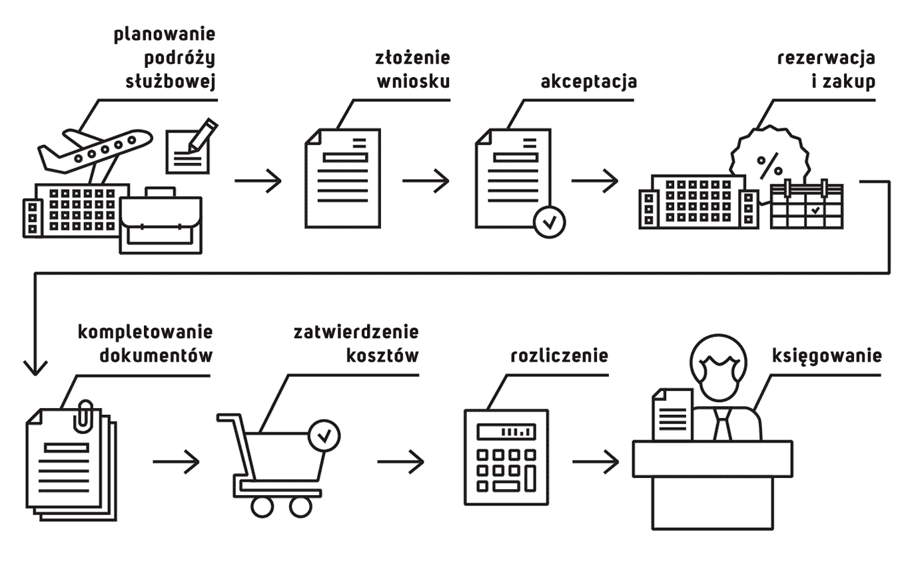

Digitalizacja i automatyzacja procesów w biznesie to dziś powszechność. Praca z danymi, a nie z obrazami dokumentów stanowi podstawę automatyzacji procesów finansowych. W Vaterval połączyliśmy wartości użytkowe dla funkcji finansów z automatyzacją zakresu biznesowego, tj. rezerwacji, zakupu biletów i pobytów hotelowych. Do integracji wybraliśmy tylko tych partnerów, którzy gwarantują nam wydajne i skuteczne silniki OCR, sprawdzone wyszukiwarki Online Booking Tools oraz najbardziej rozwojowe technologie. Nasz system ułatwia pracę podróżującym, korzysta z inteligentnej integracji w zakresie zarządzania strukturą organizacyjną, danymi dostawców, planem kont i wymiarami analitycznymi ERP.
Komponenty funkcjonalności automatyzacyjnych:
